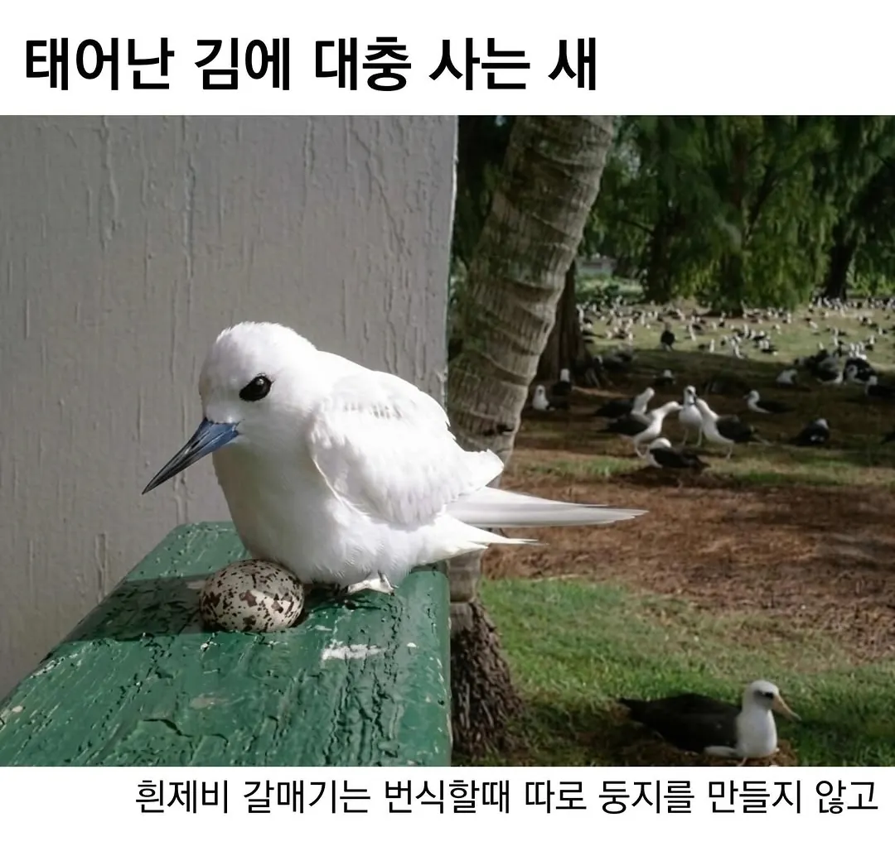
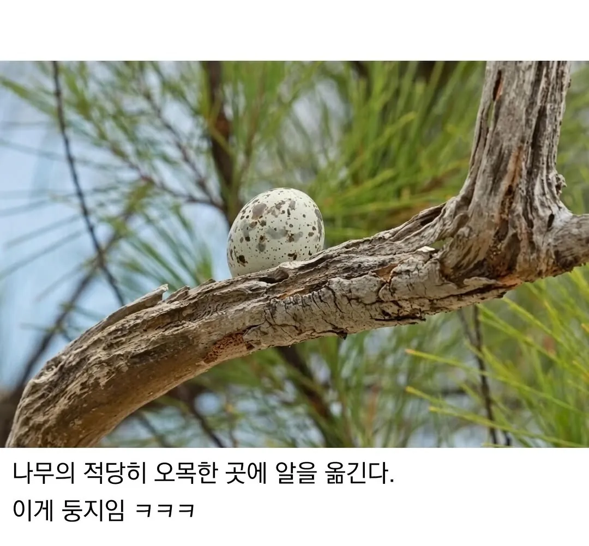
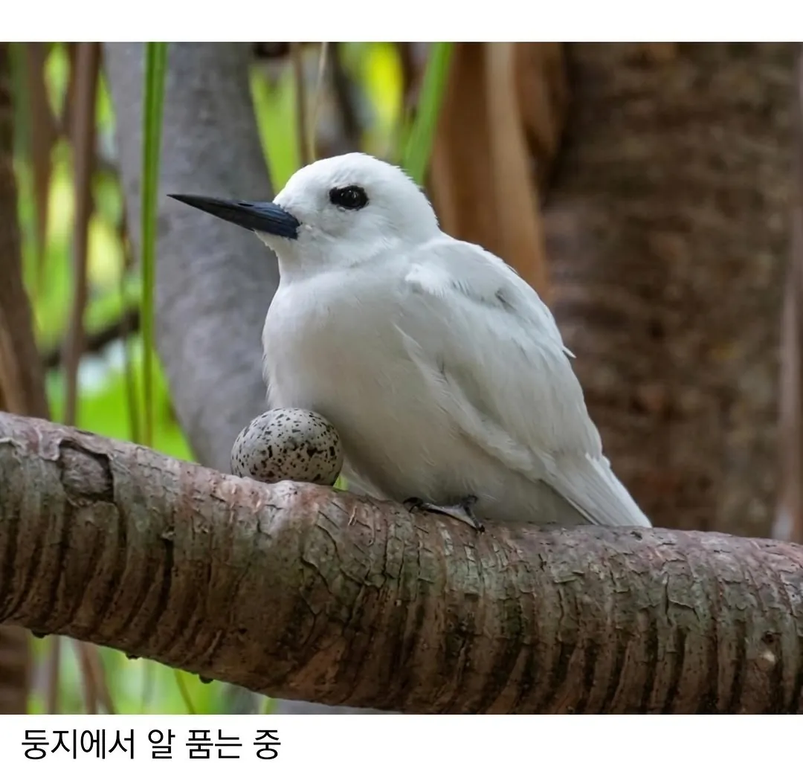
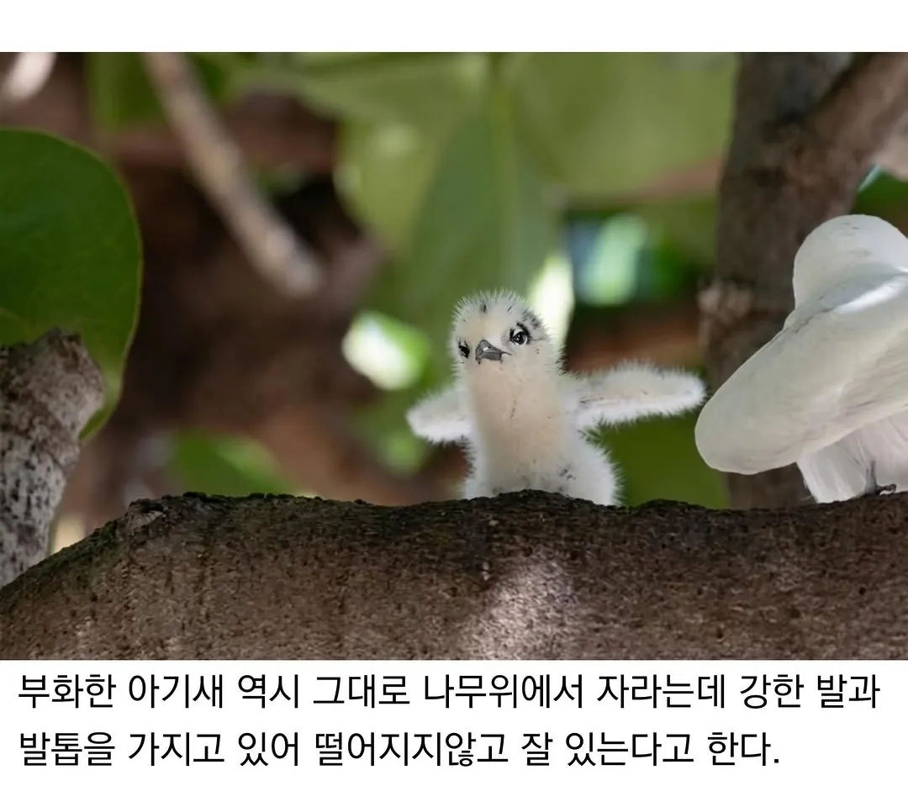
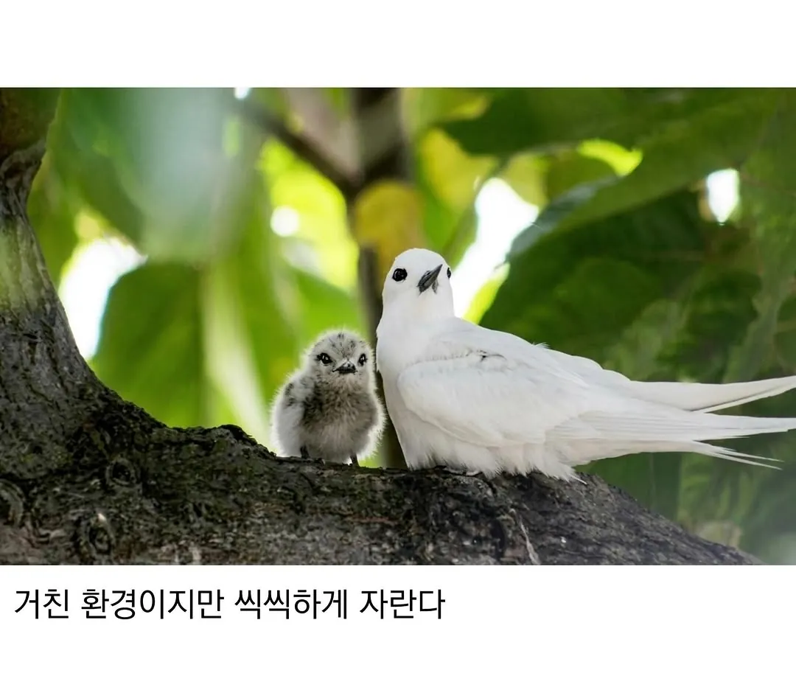
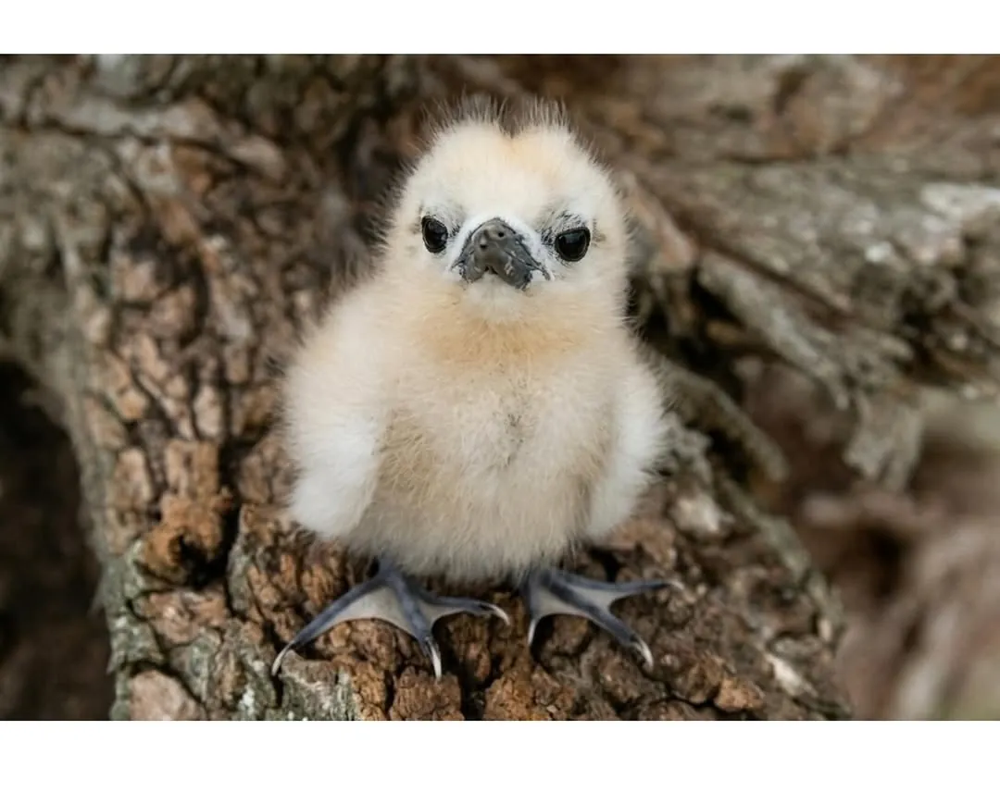

표정 ㅈㄴ 웃김
지가대충살면서 모든게 불만임 ㅋㅋㅋㅋㅋㅋㅋㅋㅋㅋㅋㅋ
=ㅅ=
털 삐쭉삐쭉 너무 귀여워 ㅜㅜ
말투
씨발! 존나 귀엽구만! 크하하하
웃지않았다 뭐냐ㅋㅋㅋㅋ
이거 비둘기도 그러는데 도시에서 흔히보는비둘기는 바위비둘기라 절벽이나 바위 구석에 살던애들이라 나뭇가지 대여섯개 물어와놓고 둥지끝이요 ㅅㄱ 하는경우가많음
도시에서는 모든 건물이 절벽이고 바위 그 자체라 건물구석에 나뭇가지 몇개갖다놓고 걍 알낳음 까치집이랑 비교해보면 ㄹㅇ어처구니없음 ㅋㅋ
https://youtu.be/sVWoX461ZUc
https://youtube.com/shorts/l7g1fmBqzTs
뭐 까지꺼 대~~~충
역시 참피들이었네
새끼도 존나 쌔보이네 ㅋㅋㅋ
와씹 발톱길이봐 ㅋㅋ
눈마새 피마새를 이은 대충 사는 새
대사새 ㄷㄷ
새끼가 수없이 떨어지고 죽다가
걔중에 발톱 길게 태어난 애들만 살아남아서
지금까지 오게 됐다는거지?
그것이 바로 진화이니까
발 저정도면 안만들어도되것네
흰제비갈매기는 둥지를 만들지 않고, 대신 가는 가지 위나 바위틈 등의 움푹한 곳에 알을 낳는 것으로 유명하다.
이렇게 알을 낳는 이유는 둥지에 기생하는 기생충 때문에 둥지 짓는 걸 포기했다고 추측하고 있으며, 혹은 알이나 새끼를 노리고 둥지를 습격하는 설치류나 도마뱀들로부터 알을 보호하기 위한 행위라고 알려져 있다. 다만 강한 바람에 알이 떨어져 깨질 수 있기 때문에 이를 막기 위해 암수가 재빠르게 알을 돌아가면서 지킨다. 알에서 깨어난 새끼는 태어났을 때부터 다리가 발달된 상태로 가지 등에 매달려 있을 수 있다.
이러한 위험한 육아 방식에도 흰제비갈매기는 꾸준하고 광범위한 개체수를 유지하고 있다. 이들은 칠레와 콜롬비아 해안에서 뉴질랜드까지 태평양을 가로질러, 중국에서 인도, 남부 몰디브, 인도양, 남아프리카, 아시아 동부와 남부 해안을 따라 광범위하게 분포한다. 일본이나 마다가스카르, 멕시코, 대서양의 일부 섬에서도 발견된다.
집을 터는 새끼들이 많아서 그냥 노숙자가 되기로 했다
눈이 초롱초롱해 ㅋㅋ
안 품을꺼 같은데 부화가 가능해?
다 대충인대신 발갈퀴 하나는 제대로네 ㅋㅋㅋ
아니 짤 하나하나가 전부다 킥이넼ㅋㅋㅋㅋ
부리도 대충 박아넣은거같네
강자의 여유
일단 대책없이 일단 낳고 잘키우네
출산율 저하인 대한민국이 본받을 모델
ㄱㅇㅇ